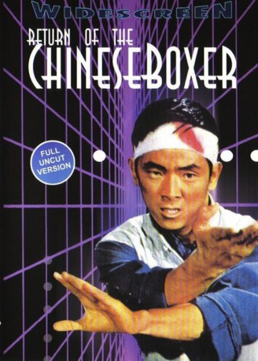

#4297 Das Todeslied des Shaolin
Alternativ: Return of the Chinese Boxer (Englischer Titel)
 
 IMDB-Wertung: 6.7 / 10
IMDB-Wertung: 6.7 / 10  Metascore: 0
Metascore: 0 
In wake of the First Sino-Japanese War (1894-1895), a group of Japanese warlords calculate that the best way to prepare an invasion of the rest of China from their southern Manchuria staging ground. They form an alliance with General Tao, a major power broker in the kingdom, prompting other Chinese generals to rally against him. The chief asset among these patriots is martial arts master named "Rapid Fist" Sau Pai-lung who subsequently thwarts every assassination attempt and other acts of subversion committed by the Japanese forces. Unable to vanquish Sau with battalions of riflemen and ninjas, the invaders enlist the services of several notorious killers, including pole-fighting monk Yin Feng and ruthless gunslinger Black Crane. They attack Sau with an array of exotic weaponry including a double-barrel shotgun that resembles an over-sized fan. At one point, when the Japanese find their backs against the wall, they use magic to bring back three men from the dead, transforming them ...
Jahr: 1977
Dauer: 99 Minuten
FSK: 18
Land: Taiwan Studio: Alemannia-FilmverleihTonspuren:
Untertitel:
Auflösung: 1080p (1920x808) Größe: 7833 MB
Genre: Action, Abenteuer
Regisseur: Yu Wang
Drehbuch: Rock Shaink Jr.
Soundtrack:
Darsteller:
 Yu Wang als Sau Pai-lung
Yu Wang als Sau Pai-lung- Ti-Men Kan als
- Fei Lung als Black Crane
- Emily Y. Chang als
- Kang Chin als Yin Feng
- Chi-Min Chin als
- Pao-Shan Chang als
- Yi Kuei Chang als
- Chin Hai Chen als
- Tien-Chi Cheng als
- Hou-Chiang Chi als
- Wan Hsi Chin als
- Kuo Chung Ching als
- Alan Chung San Chui als
- Po Wei Hou als
- Han Hsieh als
- Hsing Hsieh als
- Han Chang Hu als
- Blackie Shou Liang Ko als
 Phillip Ko als
Phillip Ko als - Hung Kuan als
- Chun Lei als
- Chiang Li als
 Fa Yuan Li als
Fa Yuan Li als - Shan Liu als Waitress
- Jack Long als
- Yun-Pao Lu als
- Chi Ma als
- Ching-Shun Mao als
- Ming Min als
- Li-Pao Ou als
- Jung Chi Sun als
- Chien-Po Tsen als
- Kuo Hui Wang als
- Yung Sheng Wang als
Datei: X:\FSK18-Eastern\Todeslied des Shaolin, Das (1977, FSK18, 1920x808).mkv seit 04.09.2016
Festplatte: FSK18
 Es gibt insgesamt 102 Filme in der Gruppe 'FSK18-Eastern'
Es gibt insgesamt 102 Filme in der Gruppe 'FSK18-Eastern'